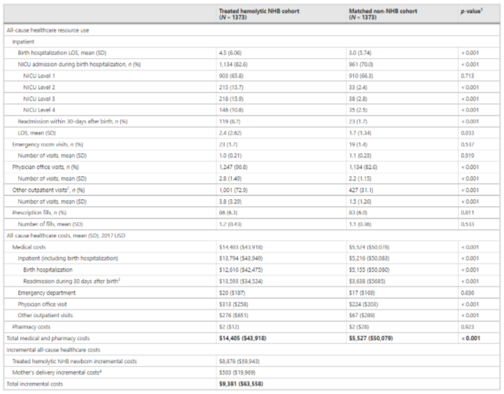
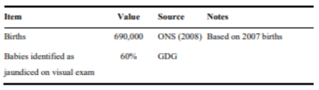
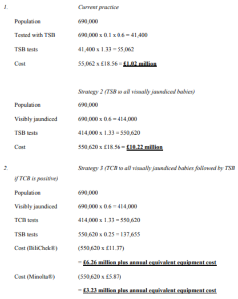

A NIVEL GLOBAL
El tratamiento de la ictericia neonatal durante los primeros 30 días puede llegar a imponer un costo elevado para algunas familias debido a los análisis, recursos y tiempo que se debe invertir en ello.
Table 5 Healthcare resource utilization and costs during 30 days after birth
COSTO EN EL EXTRANJERO
En Inglaterra se alcanzó a medir el presupuesto total gastado en curar casos con ictericia neonatal durante el año 2009.
Cost benefic parameters

Para hacer este recuento, se usó la tasa de de infantes nacidos e identificados con ictericia neonatal durante el año 2007.
Population characteristics
Durante los siguientes años se plantea usar otros métodos de gasto y diagnóstico para reducir el presupuesto gastado para resolver esta problemática. Los modelos económicos de estos proyectos se muestran a continuación.
Calculation of total costs per annum of each strategy
